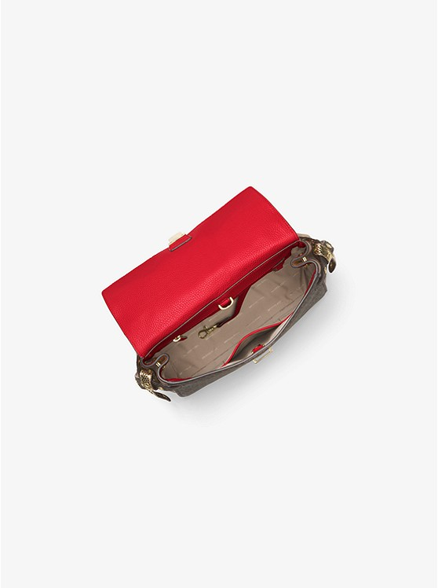
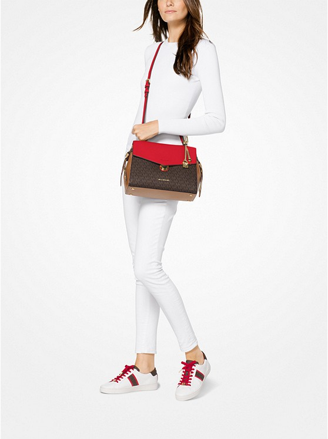
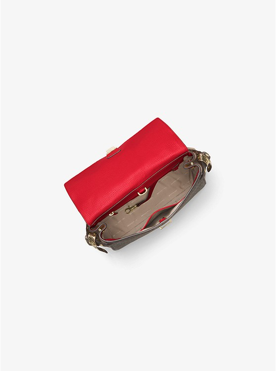
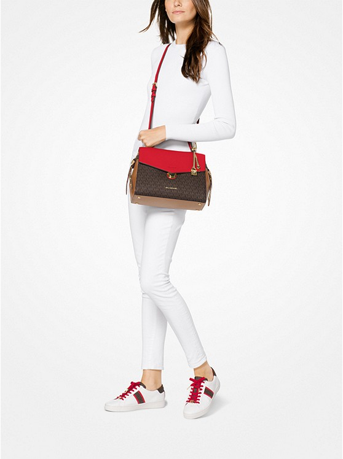

Бренд - MICHAEL KORS. Основной материал - кожа натуральная. Подкладка ткань.
Материал
Осн. материал - кожа натуральная, ткань. Обработка осн. материала - штампованная.
Размеры
Длина - 20 см. Высота - 25 см. Ширина - 8 см.
Ручка
Высота ручки - 18 см. Материал ручки - кожа
Отделения
Количество отделений - 2. Количество внутренних карманов - 2.
MICHAEL Michael Kors — молодежная линия американского бренда Michael Kors, отличающаяся особым лаконичным стилем. Сумки Michael Kors просты и элегантны одновременно — минимум деталей, оформленные силуэты и плавные линии.
©Все права защищены.